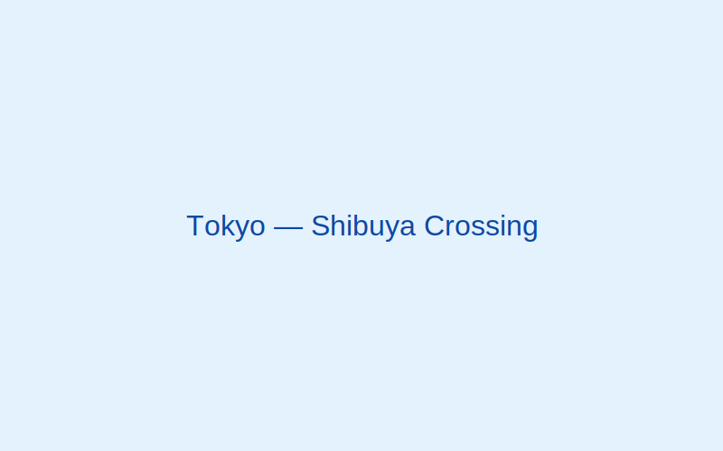
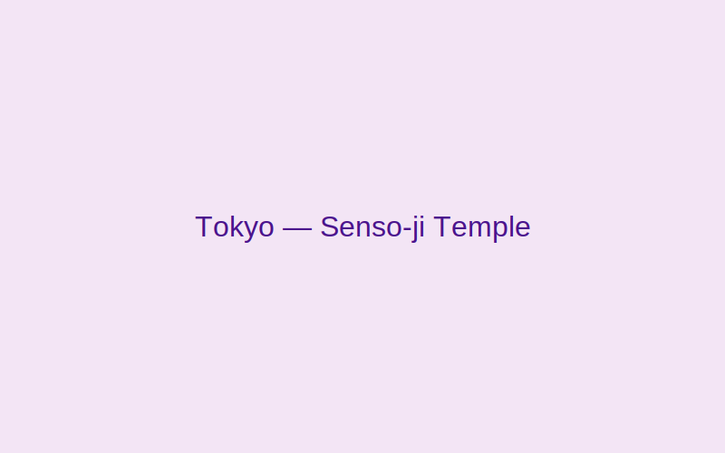
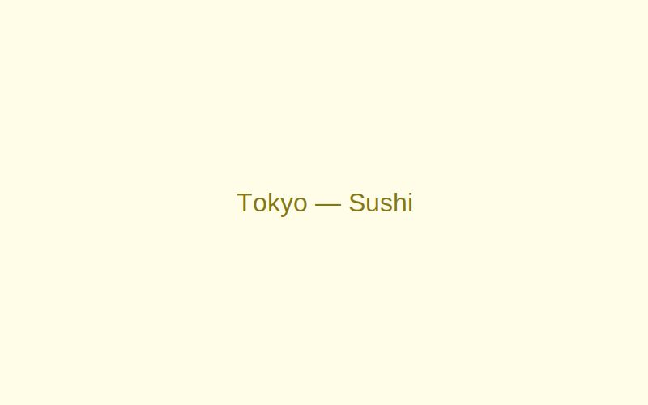

Tokyo, Japan
Tokyo fuses ultra-modern life with deep tradition. Experience tranquil temples steps away from bustling neon-lit avenues.
Gallery



Why visit
From cutting-edge tech to exquisite cuisine and serene gardens, Tokyo offers endless discoveries for every traveler.
Best time to visit
March–May for cherry blossoms and October–November for vibrant autumn foliage.
Top attractions
- Senso-ji Temple (Asakusa)
- Shibuya Crossing & Hachiko Statue
- Meiji Shrine
- Tsukiji Outer Market
- Odaiba waterfront
Local food & culture
- Sushi
- Artful bites of vinegared rice with fresh seafood.
- Onsen
- Traditional hot springs for relaxation and wellness.
- Omotenashi
- Japanese spirit of hospitality and attention to detail.